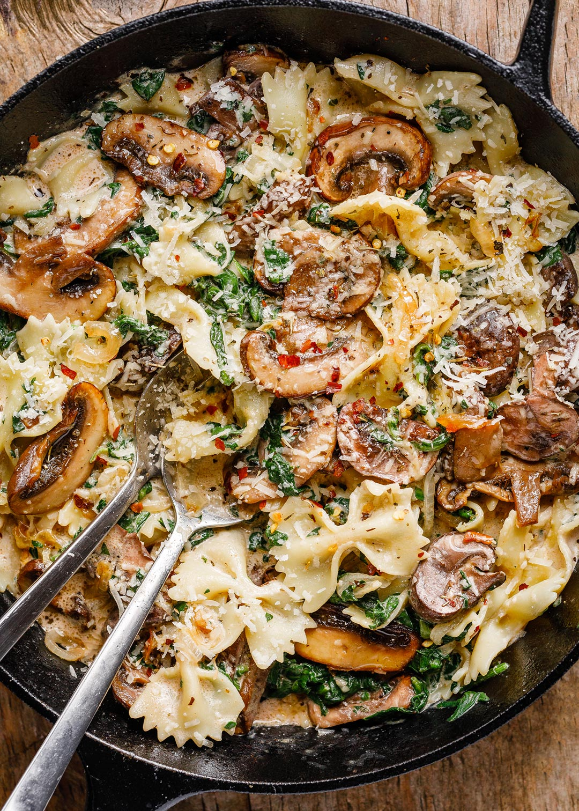

One Pot Creamy Pasta with Spinach and Mushrooms

Details
This one-pot pasta will quickly become a staple dinner in your house
with its creamy garlic and parmesan sauce, balanced out with vegetables.
Ingredients
-
14 oz (400g) farfalle pasta
-
3 tbls olive oil
-
2 medium onions, sliced
-
3-4 cloves garlic, minced
-
14 oz (400g) mushrooms, sliced
-
10 oz (300g) fresh spinach
-
1/2 cup low sodium vegetable broth
-
Fresh cracked pepper to taste
-
1 tsp Italian seasoning
-
1/2 cup parmesan cheese, grated
-
1/2 cup heavy wipping cream
-
1 tsp red chili pepper flakes
Directions
-
Cook the pasta in salted water until al dente.
-
Heat 1 tbls olive oil in a large skillet. Add the onion and
saute for 2-3 min until translucent and slightly browned.
Transfer to a plate
-
Add mushrooms to the skillet and saute for 3 min until browned.
Transfer the mushrooms to the plate with the onions.
-
Add spinach to the skillet and cook for 2 minutes until just
wilted. Transfer to the plate.
-
Heat oil and then add garlic to skillet for about 30 seconds. Deglaze
the pan with vegetable broth. Add the cream, parmesan, chili
pepper flakes, and Italian seasoning, and cook for 2 min until combined.
-
Add in the cooked, drained pasta and vegetables back into the skillet
and toss to combine. Add more parmesan cheese to your liking and enjoy!